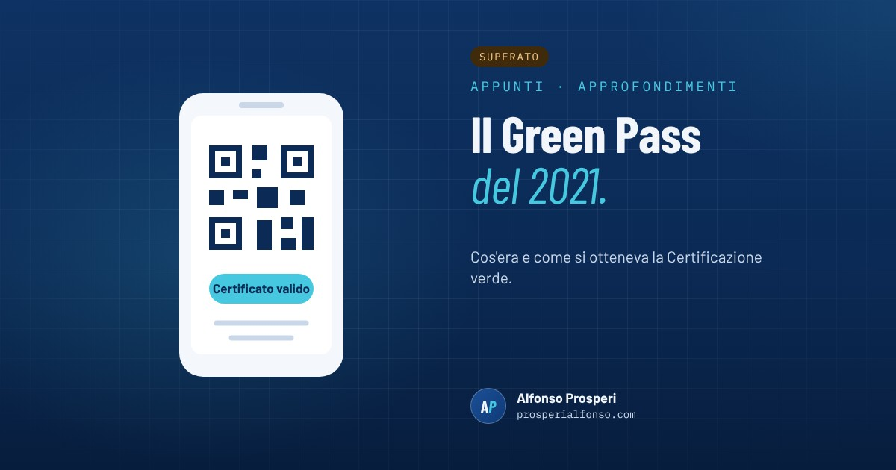

Il 17 giugno 2021 è andata online la piattaforma nazionale per scaricare la Certificazione verde Covid-19, il cosiddetto Green Pass, all'indirizzo dgc.gov.it.
La piattaforma era ancora in fase di sviluppo, ma tutte le certificazioni legate alle vaccinazioni sarebbero state disponibili entro il 28 giugno, prima dell'entrata in vigore in tutta Europa dal 1° luglio 2021. Chi aveva ricevuto via SMS o email il codice per vaccinazione, test negativo o guarigione poteva già scaricarla.
Che cos'era
Una certificazione in formato digitale e stampabile, emessa dalla piattaforma nazionale del Ministero della Salute, con un QR Code per verificarne autenticità e validità. Serviva per partecipare a eventi pubblici, accedere a residenze sanitarie assistenziali e altre strutture, spostarsi tra territori in "zona rossa" o "zona arancione". Dal 1° luglio 2021 valeva anche come certificato Covid digitale dell'Unione europea, per viaggiare più facilmente nei Paesi dell'UE e dell'area Schengen.
Come funzionava
- Dopo la vaccinazione, un test negativo o la guarigione, la certificazione veniva emessa automaticamente dalla piattaforma nazionale, sulla base dei dati trasmessi dalle Regioni.
- Quando era pronta, arrivava un SMS o un'email con un codice di autenticazione (AUTHCODE) e le istruzioni per scaricarla.
- Agli operatori autorizzati bastava mostrare il QR Code, sul telefono o stampato. La verifica avveniva con l'app VerificaC19, che mostrava solo l'esito e i dati anagrafici essenziali.
- Era gratuita e disponibile in italiano e in inglese.